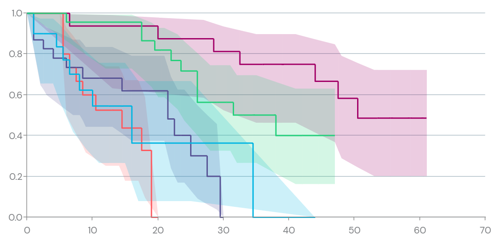

![]()
This is part three of a series on statistical methods for analysing time-to-event, or “survival” data.
Statistical inference
Statistical inference is the process of using data to infer the properties of an underlying probability distribution. In the context of survival analysis, we want to estimate the distribution of time-to-event data, which is often incomplete due to censoring or truncation. This is a key challenge in survival analysis, as we need to account for the fact that we may not observe the event of interest for all individuals in our study. For more details about censored and truncated data see the previous post in this series.
Likelihood estimation
The likelihood function, often termed \(L\), is used to connect statistical models to observed data in both the frequentist and Bayesian frameworks. The likelihood is the probability of observing the data, \(D\), given the parameters, \(\theta\), of the model and formally expressed as:
\[L(\theta \mid D) = f(D \mid \theta) = \prod_i f(X_i \mid \theta)\]
where \(f\) is the probability density function, and \(X_i\) are assumed to be i.i.d observations in the data.
Frequentist vs Bayesian
In the ‘frequentist’ framework the parameters of a statistical model are considered to have a fixed ‘true’ unknown value to be estimated, and the data are realisations of random variables. The parameters of the model are estimated by maximising the likelihood to obtain the maximum likelihood estimate (MLE), denoted \(\hat{\theta}\).
Bayesian methods are an alternative to maximum likelihood estimation, used to estimate the probability distribution of the parameters of the model given the data, known as the ‘posterior distribution’. In the Bayesian framework, all quantities (both observable quantities and parameters) are considered as random variables, with observed data being realisations of these random variables. The posterior distribution, \(f(\theta \mid D)\), is related to the likelihood function, \(f(D \mid \theta)\), via Bayes formula:
\[ f(\theta \mid D) = \frac{f(D \mid \theta)f(\theta)}{f(D)}\]
Censored and truncated data
Constructing likelihoods for censored or truncated data requires careful consideration of the information provided by each observation. The previous post in this series provided a definition of censoring and truncation, and the right and left censoring and truncation times.
The likelihood components provided by censored observations are:
- for exactly observed data: information on the probability of the event occurring at this time, i.e. \(f(X)\)
- for right-censored observations: information on the survivor function up to a certain time, i.e. \(S(C_r)\)
- for left-censored observations: information on the cumulative incidence up to a certain time, i.e. \(F(C_l)\)
- for interval-censored observations: information on the probability that the event is within this interval, i.e. \(S(L) - S(R)\).
As data may be observed with different levels of censoring or truncation, the likelihood function is constructed from the joint product of each component for each observation \(i\):
\[L \propto \prod_{i} f(X_i) \prod_{i} S(C_{r,i}) \prod_{i} F(C_{l,i}) \prod_i (S(L_i) - S(R_i))\]
The equivalent likelihood components for truncated data provide information on conditional probabilities of events, i.e. \(f(X)/F(Y_r)\) for right-truncated observations, where observation is conditional on the event of interest having occurred by truncation time \(Y_r\).
Parametric and non-parametric models
The statistical models used for estimating model parameters may be parametric or non-parametric. In general, parametric models rely on assumptions about the distribution of the underlying survival times (e.g. Weibull, Gamma, etc.), so careful selection of this distribution is needed for valid inference.
In contrast, non-parametric models require fewer assumptions about the survival distribution, so can be applied when the functional form of the distribution is not known, but may require more data and not allow for extrapolation beyond the time period of the observed data. Comparisons to non-parametric estimates can be made to assess the fit of a parametric model.
The Kaplan-Meier estimator
The Kaplan-Meier estimator is a widely-used, non-parametric method to estimate the survivor function, \(S(t)\), from censored data, and defined as:
\[\hat{S}(t) = \prod_{t_k \leq t}\left(\frac{n(t_k) - d(t_k)}{n(t_k)}\right)\]
where \(d(t_k)\) is the number of events, and \(n(t_k)\) is the number of individuals at risk at time \(t_k \leq t\).
The Kaplan-Meier estimator is a step function, with jumps at each observed event time, and the size of the jump is the proportion of individuals who experience the event at that time. The Kaplan-Meier estimator is often plotted as a survival curve, with time on the x-axis and the estimated survival probability on the y-axis.

The Cox proportional hazards model
The Cox proportional hazards model assumes that the hazards of death for any two individuals are proportional over time, expressed by writing the hazard function conditional on a given set of \(M\) constant or time-varying covariates \(\boldsymbol{z} = \{z_{1}\ldots, z_{M}\}\) as:
\[h(t \mid \boldsymbol{z}) = h^{(0)}(t)\exp\left(\sum_{m=1}^{M}\beta_{m}z_{m}\right) \equiv h^{(0)}(t)\exp(\boldsymbol{\beta}^\mathsf{T}\boldsymbol{z})\]
where \(h^{(0)}(t)\) is the baseline hazard function, and \(\beta_{m}\) are the regression coefficients. Notably, the ‘hazard ratio’ for the \(m\)th covariate is a constant:
\[\frac{h(t \mid z_m = 1)}{h(t \mid z_m = 0)} = \frac{h^{(0)}(t)\exp(\beta_m 1)}{h^{(0)}(t)\exp(\beta_m 0)} = \exp(\beta_{m})\]
The regression coefficients \(\beta_{m}\) are estimated by maximising the partial likelihood \(L(\boldsymbol{\beta})\):
\[L(\boldsymbol{\beta}) = \prod_{i \in D}\frac{\exp(\boldsymbol{\beta}^\mathsf{T}\boldsymbol{z}_{d_i})}{\sum_{j \in R_i}\exp(\boldsymbol{\beta}^\mathsf{T}\boldsymbol{z}_j)}\]
where \(D = \{T_1, T_2, \ldots, T_n\}\) are the set of distinct failure times, \(R_i\) is the set of all individuals who are at risk of failure immediately before time \(T_i\), \(\boldsymbol{z}_{d_i}\) is the covariate vector for an individual who failed at time \(T_i\), and \(\boldsymbol{z}_j\) is the covariate vector for the \(j\)th individual at risk at time \(T_i\).
- Statistical inference allows us to estimate survival distributions despite incomplete data from censoring or truncation.
- Likelihood functions connect our statistical models to observed data, with special adaptations for censored and truncated observations.
- Parametric models assume a specific distribution for survival times, while non-parametric approaches make fewer assumptions.
- The Kaplan-Meier estimator is a non-parametric method to estimate the survivor function from censored data.
- The Cox proportional hazards model relates survival times to explanatory variables through a semi-parametric approach.
- The proportional hazards assumption means that the ratio of hazards between different groups remains constant over time.
Coming next
In the next post, I’ll explain how to handle scenarios where multiple possible events can occur, and the challenges this presents for traditional survival methods. I’ll introduce two methods for competing risks data, analogous to the Kaplan-Meier and Cox models described above:
- The Aalen-Johansen estimator - a non-parametric method for estimating the cumulative incidence function.
- The Fine-Gray model - a regression model for estimating the effect of covariates on the subdistribution hazard.
References
- Austin PC. A Tutorial on Multilevel Survival Analysis: Methods, Models and Applications. Int Stat Rev. 2017;85(2):185-203.
- Collett D. Modelling Survival Data in Medical Research. Chapman & Hall/CRC Texts in Statistical Science 2023.
- Klein JP, Moeschberger ML. Survival Analysis: Techniques for Censored and Truncated Data.
- Wasserman LA. All of statistics. Springer. 2004.
Reuse
Citation
@online{kirwan2025,
author = {Kirwan, Peter},
title = {Part {III:} {Classical} Survival Methods},
date = {2025-04-03},
url = {https://www.pkirwan.com/blog/classical-survival-methods/},
langid = {en}
}